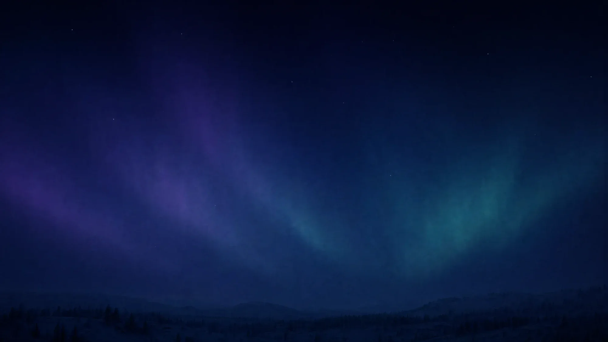
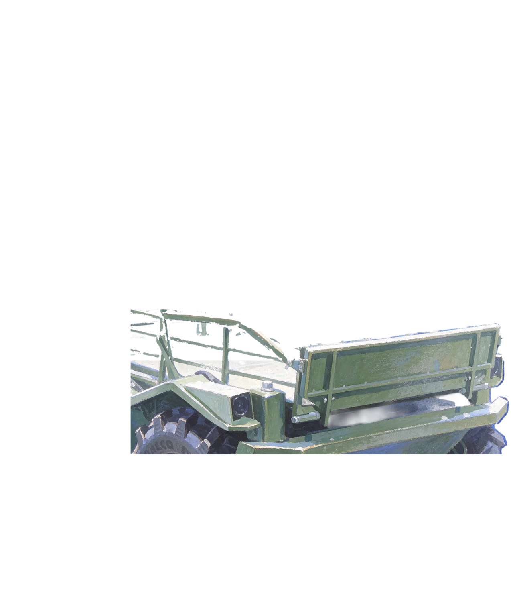
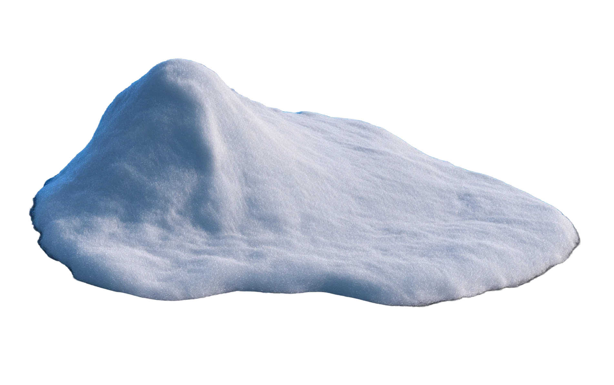
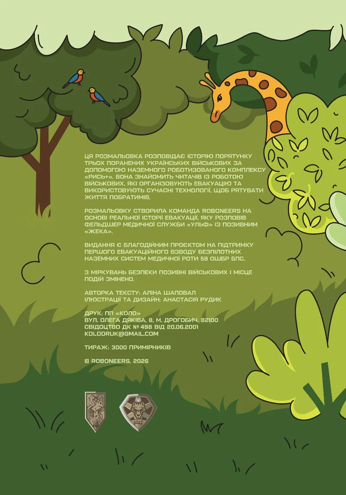
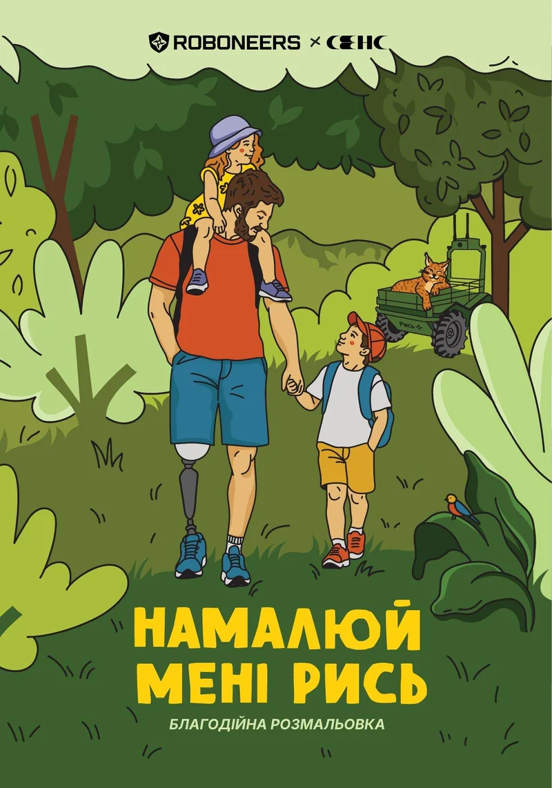

Roboneers
Українська команда, що створює наземні роботизовані комплекси, зокрема «Рись+». Ініціатори й видавці розмальовки.




Про проєкт
Розмальовка розповідає, як наземний роботизований комплекс «Рись+» допоміг врятувати трьох поранених українських військових.
Команда Roboneers створила її на основі реальної історії евакуації, яку розповів фельдшер медичної служби «Ульф» із позивним «Жека». Книжка знайомить дітей і дорослих із роботою військових, які організовують евакуацію та використовують сучасні технології, щоб рятувати життя побратимів.
З міркувань безпеки позивні військових і місце подій змінено.


Розмальовка
Благодійна розмальовка для дітей і всієї родини: розфарбовуєш сторінки й дізнаєшся, як працює евакуація з поля бою.
Як допомогти
Видання — благодійний проєкт на підтримку першого евакуаційного взводу безпілотних наземних систем медичної роти 59 ОШБр БпС. Саме такі роботи, як «Рись+», вивозять поранених там, куди небезпечно заходити людям.
Для своєї дитини, племінників чи друзів. Кошти з продажу йдуть на потреби евакуаційного взводу.
Розмальовка — добрий подарунок до свят: і дитині заняття, і військовим допомога.
Поділися цією сторінкою. Що більше людей знає про проєкт, то швидше розійдеться тираж.
Купити
Ціна, доставка та спосіб оплати з’являться тут найближчим часом.
Хто створив
Українська команда, що створює наземні роботизовані комплекси, зокрема «Рись+». Ініціатори й видавці розмальовки.
Опис партнера — заглушка. Тут буде кілька речень про СЕНС і його роль у проєкті.
Авторка тексту.
Ілюстрації та дизайн.
Питання
На підтримку першого евакуаційного взводу безпілотних наземних систем медичної роти 59 ОШБр БпС.
Відповідь — заглушка. Вкажіть рекомендований вік.
Відповідь — заглушка. Тут будуть способи доставки або точки, де її можна забрати.
Відповідь — заглушка. Наприклад, для школи, садочка чи як подарунки.
Так. Книжку створено на основі реальної евакуації, про яку розповів фельдшер медичної служби «Ульф». З міркувань безпеки позивні та місце подій змінено.